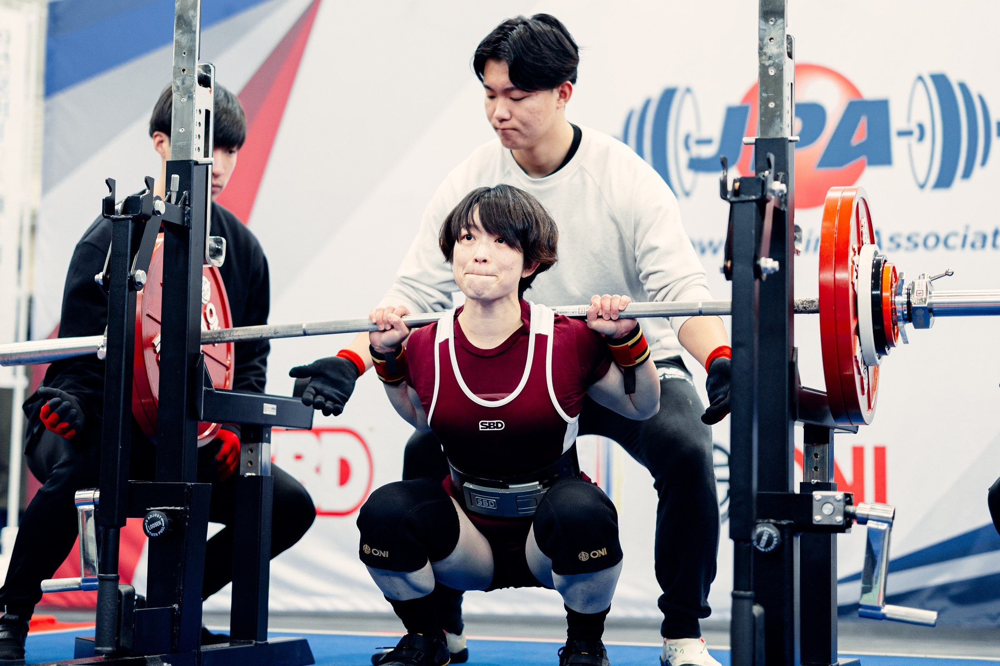

しおりんパワーリフター・トレーナー
選手・トレーニーの目標達成をサポート。自身も日本一、日本記録、世界大会など、「絶対に取りたい一本」と向き合う競技経験を重ねてきました。
メンタルが強い人になる必要はない。本番で何が起きても、「自分はどうすればいいか」を知っている選手になること。

練習では挙がる。
でも、大事な一本になると怖くなる。
パワーリフターのための
実践メンタルトレーニング
Your Struggle
メンタルは、生まれ持った性格でも、気合いでもない。トレーニングできる“スキル”です。
Three Shifts
Program
Curriculum
しおりんパワーリフター・トレーナー
選手・トレーニーの目標達成をサポート。自身も日本一、日本記録、世界大会など、「絶対に取りたい一本」と向き合う競技経験を重ねてきました。
メンタルが強い人になる必要はない。本番で何が起きても、「自分はどうすればいいか」を知っている選手になること。